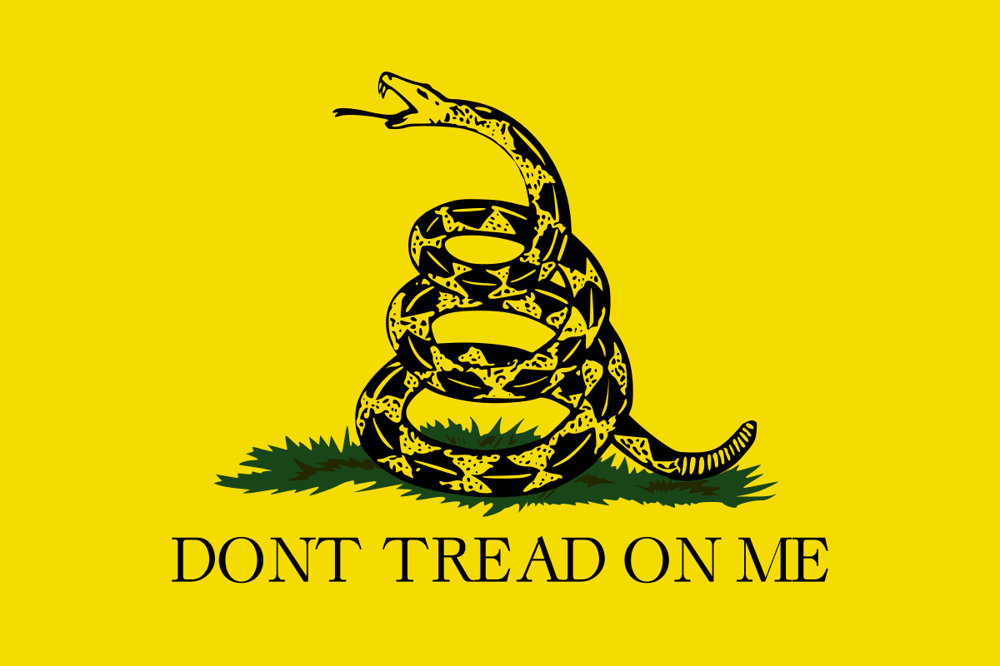

Według najbardziej znanego naukowca zajmującego się wężami,
Wąż jest to zwierzę, które składa się z długości i które prawie nie ma szerokości.
Długość węża jest znacznie większa niż jego szerokość.
Znając definicję węża, możemy z dużym prawdopodobieństem określić, które zwierzęta są wężami, a które wężami nie są.
Aby rozpoznać węża, należy sprawdzić, czy zwierzę, które zostało uznane za węża składa się przede wszystkim z długości.
Jeżeli rzeczywiście długość zwierzęcia znacznie przekracza jego szerokość, wówczas mamy podstawy do stwierdzenia, że obserwowany obiekt jest właśnie wężem. Przy rozpoznawaniu węży należy jednak zachować ostrożność. Wiele gatunków innych stworzeń może do złudzenia przypominać węże, wprowadzając obserwatora w błąd.

Gatunki zwierząt, które łatwo można pomylić z wężami ze względu na podobną do węży, podłużną budowę ciała:
Aby odróżnić węża od wyżej wymienionych zwierząt może być potrzebna pomoc przyrodnika. Wprawny obserwator bez większych problemów odróżni jednak węża od gąsienicy.
Jak mówi autorski wstęp do Identyfikacji Węży i Wężynek
autorstwa szalonego araba Abdula Alhazreda:
Przez wiele lat badałem węże a zwierzęta te imponowały mi swoją długością a zarazem znikomą szerokością.Zgodnie z instrukcją uczonego, aby odróżnić węża od gąsienicy, należy obrócić zwierzę za pomocą podłużnego przedmiotu (lecz nie za pomocą węża) i przyjrzeć się czy stworzenie posiada odnóża w miejscu, w którym mogłoby takie odnóża teoretycznie posiadać.
Niejeden raz próbowałem odkryć cechę, która pozwoliłaby mi rozróżnić już z daleka, bez pomocy linijki czy miarki, czy dane zwierzę należy do rodzaju węży. Po wielu latach żmudnych badań, zostałem nawiedzony przez wężowy sen. Zbudziłem się i spisałem moją szaloną myśl na pergaminie leżącym obok łóżka. Nie była to jeno myśl szaleńca zbudzonego ze snu o północy w księżycową noc. Dalsze badania potwierdziły objawienie, jakiego doświadczyłem. Węża bowiem można rozpoznać po jeszcze jednej cesze, której niepodobna stwierdzić u wielu innych zwierząt. Tą cechą jest całkowity, niepodważalny i absolutny brak nóg.
Wszystkie węże na świecie należą do międzykontynentalnej wspólnoty węży, która pełni rolę jednego wielkiego państwa, zwanego oficjalnie Republiką Węży
Wybory w Republice Węży odbywają się co siedem składających się z długości lat i może w nich wziąć udział każdy wąż, który przeszedł w życiu minimum pięć wylinek.
Parlament węży mieści się pod kamieniem na południu Etiopii i składa się z dwóch izb: ssssejmu i ssssenatu. Podczas wyborów węże wybierają 500 possssłów i 100 ssssenatorów.
W chwili obecnej trwa XXVI kadencja sejmu.
Partie polityczne znajdujące się w sejmie:
| Nazwa partii | Liczba possssłów | Procent miejsc w sejmie | Charakter parii |
|---|---|---|---|
| Partia Libertariańska | 208 | 41,6% | Libertarianizm |
| Mężne Węże | 121 | 24,2% | Konserwatyzm, militaryzm |
| Sssss2 | 84 | 16,8% | Socjaldemokracja, sosjalliberalizm |
| Długość i Szerokość | 52 | 10,4% | Centrum |
| Anarchokomunistyczne Anakondy | 35 | 7% | Anarchokomunizm |
Wypełnij poniższy quiz i kliknij "prześlij". Wyniki quizu wyślemy Ci na maila